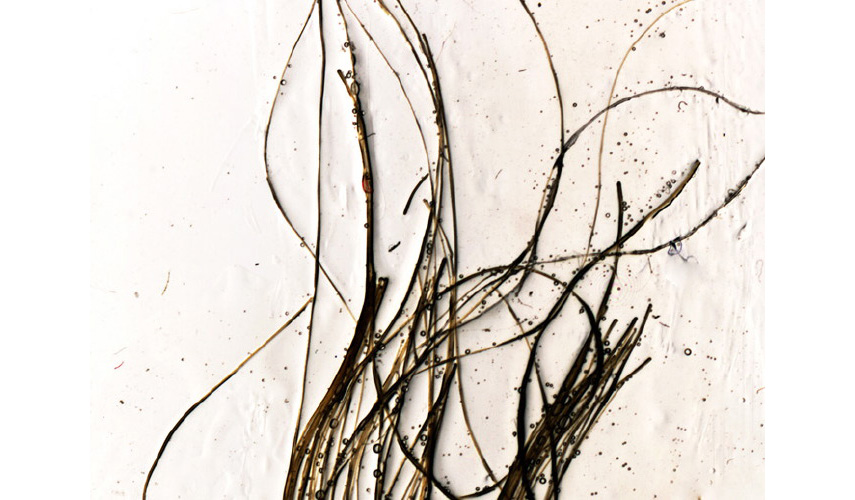

The film Be Brave my Love ! is made of an unused roll of film to which thousands of pieces of hair have been affixed. It offers two modalities of presentation: it is both a movie (immaterial) and a film (physical). A film is an organic material (gelatin is made of bones) whose movement captures life in a fragile eternity. With today's technology, digital video spreads its ghost wide, relentlessly replacing film and doing away with matter like the witch who tries to cut Rapunzel's hair. Until the nineteenth century, the lock of hair (in hair-jewels or hair-paintings) was the incarnation of the beloved, beyond space and time. The hair and the film tie a link to the beloved, assuaging the fear of loss by materializing love. Like a fetish object, this film intends to answer the question of eternal love and life. The sinusoidal waves of hair are reminiscent of the lines of musical staves, sound waves or wires - the most contemporary symbol of connection and network. Like an ordinary phone wire, the film doesn’t represent anything, but transmits. The loop closes itself, desire merges with its object: “Medium is the message”, as McLuhan said.
